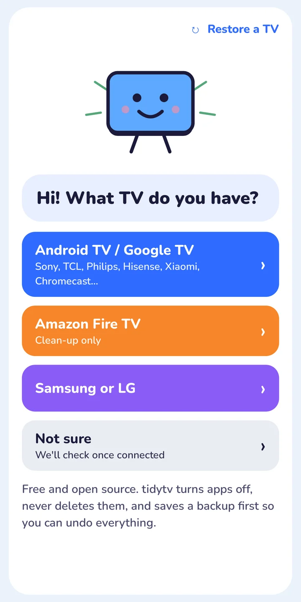
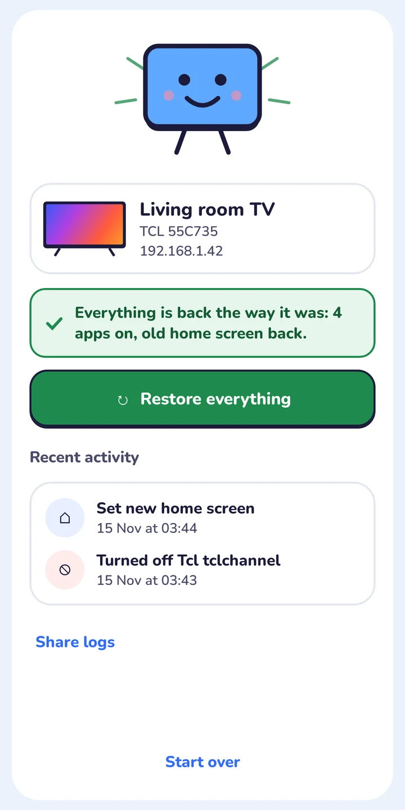
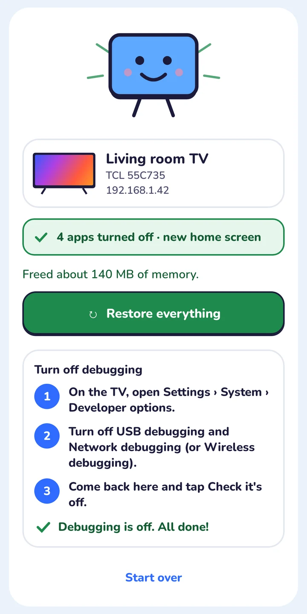

<title>tidytv</title>
<meta name="claude:viewport-fit-sides" content="cover">
<meta name="viewport" content="width=device-width, initial-scale=1, viewport-fit=cover">
<meta name="description" content="tidytv is a free, open-source phone app that turns off the ads, trackers and bloat on your Android TV. No computer, no AI. One tap puts it all back.">
<link rel="preconnect" href="https://fonts.googleapis.com">
<link rel="preconnect" href="https://fonts.gstatic.com" crossorigin>
<link href="https://fonts.googleapis.com/css2?family=Nunito:wght@500;600;700;800;900&display=swap" rel="stylesheet">
<style>
/* Layout: one motif. The TV from the app (a rounded screen on two short legs) is the shape of
   every picture frame, the bullets, the live checker and the closing mark. App palette, kept. */
:root {
  --ground: #EAF2FB;
  --card: #FFFFFF;
  --ink: #1B1B3A;
  --soft: #45456A;
  --blue: #2F6BFF;
  --blue-deep: #1E4FD8;
  --yellow: #FFD54A;
  --green: #17703D;
  --green-soft: #DFF3E6;
  --peach: #DDF2E3;
  --display: "Nunito", ui-rounded, "SF Pro Rounded", system-ui, sans-serif;
  --r: 22px;
  --step-small: 0.9375rem;
  --step-body: clamp(1.0625rem, 1rem + 0.25vw, 1.1875rem);
  --step-lead: clamp(1.25rem, 1.1rem + 0.7vw, 1.625rem);
  --step-head: clamp(2.125rem, 1.4rem + 3.4vw, 4.25rem);
  --step-hero: clamp(2.75rem, 1.2rem + 5.6vw, 6.5rem);
  color-scheme: light;
}
* { box-sizing: border-box; }
html { scroll-behavior: smooth; }
body { margin: 0; background: var(--ground); color: var(--ink); font-family: var(--display); font-size: var(--step-body); line-height: 1.55; font-weight: 600; }
img { max-width: 100%; height: auto; display: block; }
a { color: inherit; }
:focus-visible { outline: 3px solid var(--blue); outline-offset: 3px; border-radius: 6px; }
.wrap { max-width: 1240px; margin: 0 auto; padding-left: max(20px, env(safe-area-inset-left, 0px)); padding-right: max(20px, env(safe-area-inset-right, 0px)); }
h1, h2, h3 { font-weight: 900; letter-spacing: -0.03em; line-height: 1.0; margin: 0; text-wrap: balance; }
p { margin: 0; }

/* Chunky brand button: ink outline with a solid ink step under it, as in the app. */
.btn { display: inline-flex; align-items: center; gap: 10px; min-height: 58px; padding: 14px 26px; border-radius: 18px; border: 2.5px solid var(--ink); background: var(--yellow); color: var(--ink); font: 900 1.0625rem/1 var(--display); text-decoration: none; box-shadow: 0 5px 0 var(--ink); transition: transform .12s ease, box-shadow .12s ease; cursor: pointer; }
.btn:hover { transform: translateY(-2px); box-shadow: 0 7px 0 var(--ink); }
.btn:active { transform: translateY(4px); box-shadow: 0 1px 0 var(--ink); }
.btn.blue { background: var(--blue); color: #fff; }
.btn.white { background: #fff; }
.link { font-weight: 800; text-decoration: underline; text-decoration-thickness: 2px; text-underline-offset: 4px; }

/* The motif: a screen frame with two legs. */
.tv { position: relative; border: 3px solid var(--ink); border-radius: var(--r); background: var(--card); padding-bottom: 0; }
.tv::before, .tv::after { content: ""; position: absolute; bottom: -26px; width: 3px; height: 26px; background: var(--ink); border-radius: 3px; }
.tv::before { left: 30%; transform: rotate(18deg); transform-origin: top; }
.tv::after { right: 30%; transform: rotate(-18deg); transform-origin: top; }
.tv > img, .tv > .inner { border-radius: calc(var(--r) - 5px); overflow: hidden; }

/* Nav */
nav { position: relative; z-index: 3; }
nav .wrap { display: flex; align-items: center; justify-content: space-between; gap: 16px; padding-block: 20px; }
.mark { display: inline-flex; align-items: center; gap: 10px; font-weight: 900; font-size: 1.375rem; text-decoration: none; letter-spacing: -0.02em; color: #fff; }
.mark .mini { width: 34px; height: 26px; border: 3px solid currentColor; border-radius: 8px; position: relative; }
.mark .mini::before, .mark .mini::after { content: ""; position: absolute; top: 7px; width: 4px; height: 4px; border-radius: 50%; background: currentColor; }
.mark .mini::before { left: 8px; } .mark .mini::after { right: 8px; }
nav ul { display: flex; gap: 26px; list-style: none; margin: 0; padding: 0; color: #fff; font-weight: 800; font-size: var(--step-small); }
nav ul a { text-decoration: none; } nav ul a:hover { text-decoration: underline; text-underline-offset: 4px; }

/* Hero */
.hero { background: var(--blue); color: #fff; position: relative; overflow: hidden; }
.hero .wrap { position: relative; display: grid; grid-template-columns: minmax(0, 8fr) minmax(0, 4fr); gap: 40px; align-items: center; padding-block: 48px 120px; }
.hero h1 { font-size: var(--step-hero); line-height: 0.95; }
.hero .lead { font-size: var(--step-lead); line-height: 1.4; margin-top: 26px; max-width: 34ch; font-weight: 700; }
.hero .actions { display: flex; flex-wrap: wrap; gap: 18px 24px; align-items: center; margin-top: 36px; }
.hero .facts { display: flex; flex-wrap: wrap; gap: 10px 22px; margin-top: 30px; font-size: var(--step-small); font-weight: 800; }
.hero .facts span { display: inline-flex; align-items: center; gap: 8px; }
.hero .facts span::before { content: ""; width: 14px; height: 11px; border: 2.5px solid #fff; border-radius: 4px; }
/* The giant motif: a TV face cropped by the right edge and the fold */
.giant { position: absolute; right: -12vw; top: 18%; width: 46vw; aspect-ratio: 16 / 10; background: var(--yellow); border: 4px solid var(--ink); border-radius: 5vw; z-index: 0; }
.giant .eye { position: absolute; top: 32%; width: 6%; aspect-ratio: 1; border-radius: 50%; background: var(--ink); }
.giant .eye.l { left: 30%; } .giant .eye.r { left: 52%; }
.giant .smile { position: absolute; top: 46%; left: 33%; width: 22%; aspect-ratio: 2 / 1; border: 0.7vw solid var(--ink); border-top: 0; border-radius: 0 0 99px 99px; }
.phone { position: relative; z-index: 1; justify-self: center; width: min(290px, 74vw); border: 3px solid var(--ink); border-radius: 34px; background: var(--ink); padding: 8px; transform: rotate(3deg); }
.phone img { border-radius: 27px; }

/* The yellow band: the half-way mark of the page. */
.band { background: var(--yellow); border-block: 3px solid var(--ink); }
.band .wrap { display: grid; grid-template-columns: minmax(0, 5fr) minmax(0, 7fr); gap: 48px; align-items: center; padding-block: 88px; }
.band h2 { font-size: var(--step-head); }
.band p { font-size: var(--step-lead); line-height: 1.45; font-weight: 700; }
.band p + p { margin-top: 18px; font-size: var(--step-body); }

/* How it works: three fields side by side, the same app screen moving forward */
.steps { display: grid; grid-template-columns: repeat(3, minmax(0, 1fr)); }
.step { padding: 64px 32px 76px; display: flex; flex-direction: column; gap: 22px; }
.step:nth-child(1) { background: var(--card); }
.step:nth-child(2) { background: #D7E4FF; }
.step:nth-child(3) { background: var(--peach); }
.step h3 { font-size: clamp(1.75rem, 1.2rem + 1.6vw, 2.5rem); }
.step p { max-width: 32ch; }
.step .tv { width: min(260px, 100%); margin: 8px auto 30px; }
.step .tv img { aspect-ratio: 9 / 13; object-fit: cover; object-position: top; }
.steps-head { padding-block: 120px 40px; }
.steps-head h2 { font-size: var(--step-head); max-width: 14ch; }

/* What gets turned off: one group per poster line */
.groups { padding-block: 130px; }
.groups .intro { display: grid; grid-template-columns: minmax(0, 5fr) minmax(0, 7fr); gap: 40px; align-items: end; margin-bottom: 48px; }
.groups h2 { font-size: var(--step-head); }
.line { display: grid; grid-template-columns: minmax(0, 1fr) auto; gap: 8px 32px; align-items: baseline; padding-block: 18px; }
.line + .line { border-top: 3px solid var(--ink); }
.line strong { font-size: clamp(2rem, 1rem + 4.4vw, 4.75rem); font-weight: 900; letter-spacing: -0.035em; line-height: 1; transition: color .2s ease; }
.line:hover strong { color: var(--blue); }
.line .what { grid-column: 1; color: var(--soft); max-width: 60ch; font-size: var(--step-body); }
.line .state { grid-row: 1; grid-column: 2; font-size: var(--step-small); font-weight: 900; padding: 8px 14px; border-radius: 99px; border: 2.5px solid var(--ink); white-space: nowrap; }
.state.on { background: var(--green); color: #fff; }
.state.off { background: var(--card); }

/* Working switches on each group line */
.tg { grid-row: 1; grid-column: 2; position: relative; width: 74px; height: 42px; border-radius: 99px; border: 3px solid var(--ink); background: var(--card); cursor: pointer; flex-shrink: 0; transition: background .2s ease; }
.tg::after { content: ""; position: absolute; top: 4px; left: 4px; width: 28px; height: 28px; border-radius: 50%; background: var(--ink); transition: transform .22s cubic-bezier(.3,1.4,.5,1); }
.tg[aria-checked="true"] { background: var(--green); }
.tg[aria-checked="true"]::after { transform: translateX(32px); background: #fff; }
.line .what b { color: var(--ink); }
.plan { margin-top: 40px; display: flex; flex-wrap: wrap; align-items: center; justify-content: space-between; gap: 18px 28px; background: var(--card); border: 3px solid var(--ink); border-radius: var(--r); padding: 22px 26px; }
.plan p { font-weight: 800; font-size: 1.1875rem; }
.plan p span { color: var(--soft); font-weight: 700; display: block; font-size: var(--step-small); }

/* Comparison table */
.vs { padding-block: 120px 40px; }
.vs .head { display: grid; grid-template-columns: minmax(0, 5fr) minmax(0, 7fr); gap: 40px; align-items: end; margin-bottom: 40px; }
.vs h2 { font-size: var(--step-head); }
.table-scroll { overflow-x: auto; border: 3px solid var(--ink); border-radius: var(--r); background: var(--card); }
.vs table { width: 100%; min-width: 640px; border-collapse: collapse; font-size: var(--step-body); }
.vs th, .vs td { text-align: left; padding: 20px 22px; vertical-align: top; }
.vs thead th { background: var(--ink); color: #fff; font-weight: 900; font-size: 1.0625rem; }
.sr { position: absolute; width: 1px; height: 1px; overflow: hidden; clip: rect(0 0 0 0); }
.vs thead th:last-child { background: var(--blue); }
.vs tbody tr + tr th, .vs tbody tr + tr td { border-top: 2px solid #D5DAE6; }
.vs tbody th { font-weight: 900; width: 24%; }
.vs td { color: var(--soft); }
.vs td:last-child { color: var(--ink); font-weight: 800; background: #F2F6FF; }

@media (max-width: 700px) {
  .table-scroll { border: 0; background: transparent; overflow: visible; }
  .vs table { min-width: 0; }
  .vs thead { display: none; }
  .vs table, .vs tbody, .vs tr, .vs th, .vs td { display: block; width: auto; }
  .vs tbody tr { background: var(--card); border: 3px solid var(--ink); border-radius: 18px; overflow: hidden; margin-bottom: 12px; }
  .vs tbody tr + tr th, .vs tbody tr + tr td { border-top: 0; }
  .vs tbody th { padding: 16px 18px 6px; width: auto; }
  .vs td { padding: 8px 18px 14px; }
  .vs td::before { content: attr(data-label); display: block; font-size: var(--step-small); font-weight: 900; color: var(--ink); margin-bottom: 2px; }
}
/* Safety: split, the restored screen on the left */
.safety { background: var(--ink); color: #fff; }
.safety .wrap { display: grid; grid-template-columns: minmax(0, 5fr) minmax(0, 7fr); gap: 64px; align-items: center; padding-block: 120px; }
.safety .tv { border-color: #fff; max-width: 360px; }
.safety .tv::before, .safety .tv::after { background: #fff; }
.safety h2 { font-size: var(--step-head); }
.safety ul { list-style: none; margin: 34px 0 0; padding: 0; display: grid; gap: 20px; }
.safety li { display: grid; grid-template-columns: 26px minmax(0, 1fr); gap: 16px; align-items: start; }
.safety li::before { content: ""; width: 24px; height: 18px; margin-top: 5px; border: 3px solid var(--yellow); border-radius: 6px; }
.safety li b { display: block; font-weight: 900; font-size: 1.1875rem; }
.safety li span { color: #C9CBE6; }

/* Live checker: a TV-shaped search */
.check { padding-block: 130px; }
.check .wrap { display: grid; grid-template-columns: minmax(0, 5fr) minmax(0, 7fr); gap: 56px; align-items: start; }
.check h2 { font-size: var(--step-head); }
.check .lead { margin-top: 20px; max-width: 36ch; }
.check .tv { padding: 22px; }
.check label { display: block; font-weight: 900; margin-bottom: 10px; }
.check input { width: 100%; font: 800 1.25rem var(--display); color: var(--ink); padding: 16px 18px; border: 3px solid var(--ink); border-radius: 16px; background: var(--ground); }
.result { margin-top: 18px; min-height: 260px; }
.verdict { font-weight: 900; font-size: 1.25rem; padding: 12px 16px; border-radius: 14px; }
.verdict.yes { background: var(--green-soft); color: #145C33; }
.verdict.no { background: #FFE0E6; color: #7A1F33; }
.hits { list-style: none; margin: 14px 0 0; padding: 0; display: grid; gap: 8px; max-height: 300px; overflow: auto; }
.hits li { display: flex; justify-content: space-between; gap: 16px; padding: 12px 14px; background: var(--ground); border-radius: 12px; font-size: var(--step-small); }
.hits li span:last-child { color: var(--soft); white-space: nowrap; font-variant-numeric: tabular-nums; }
.brands { display: flex; flex-wrap: wrap; gap: 8px; margin-top: 26px; }
.brands button { font: 800 var(--step-small) var(--display); color: var(--ink); background: var(--card); border: 2.5px solid var(--ink); border-radius: 99px; padding: 8px 14px; cursor: pointer; min-height: 44px; }
.brands button:hover { background: var(--yellow); }
.not { margin-top: 26px; color: var(--soft); }

/* FAQ */
.faq { background: var(--card); border-top: 3px solid var(--ink); }
.faq .wrap { display: grid; grid-template-columns: minmax(0, 4fr) minmax(0, 8fr); gap: 48px; padding-block: 120px; }
.faq h2 { font-size: var(--step-head); position: sticky; top: calc(env(safe-area-inset-top, 0px) + 32px); align-self: start; }
.faq details { background: var(--ground); border-radius: 18px; margin-bottom: 10px; }
.faq summary { list-style: none; cursor: pointer; display: flex; justify-content: space-between; gap: 20px; align-items: center; padding: 22px 24px; font-weight: 900; font-size: 1.1875rem; min-height: 72px; }
.faq summary::-webkit-details-marker { display: none; }
.faq summary::after { content: "+"; font-size: 1.75rem; line-height: 1; transition: transform .2s ease; }
.faq details[open] { background: var(--blue); color: #fff; }
.faq details[open] summary::after { transform: rotate(45deg); }
.faq details p { padding: 0 24px 24px; max-width: 60ch; }

/* Closing field */
.cta { background: var(--blue); color: #fff; }
.cta .wrap { display: grid; grid-template-columns: minmax(0, 7fr) minmax(0, 5fr); gap: 48px; align-items: center; padding-block: 120px; }
.cta h2 { font-size: var(--step-hero); line-height: 0.95; }
.cta p { margin-top: 22px; font-size: var(--step-lead); max-width: 30ch; font-weight: 700; }
.cta .actions { display: flex; flex-wrap: wrap; gap: 18px 24px; align-items: center; margin-top: 34px; }
.cta .tv { border-color: #fff; max-width: 300px; justify-self: center; transform: rotate(-3deg); }
.cta .tv::before, .cta .tv::after { background: #fff; }

footer { padding-block: 72px 48px; }
footer .big { display: flex; align-items: flex-end; gap: 4px; }
footer .big span { flex: 1; display: grid; place-items: center; background: var(--ink); color: var(--ground); font-weight: 900; font-size: clamp(2.5rem, 1rem + 7vw, 8rem); border-radius: 14px; line-height: 1; padding-block: 0.25em; }
footer .big span:nth-child(odd) { background: var(--blue); color: #fff; }
footer .big span:nth-child(3) { background: var(--yellow); color: var(--ink); }
footer .cols { display: grid; grid-template-columns: repeat(3, minmax(0, 1fr)); gap: 32px; margin-top: 48px; font-size: var(--step-small); }
footer .cols p + p { margin-top: 8px; }
footer .cols b { display: block; font-weight: 900; margin-bottom: 8px; font-size: 1rem; }

/* Entrances: content is visible at rest; motion only adds travel when allowed. */
@media (prefers-reduced-motion: no-preference) {
  .js .rise { animation: rise .7s cubic-bezier(.2,.7,.2,1) both; animation-play-state: paused; }
  .js .rise.go { animation-play-state: running; }
  .js .rise:nth-child(2) { animation-delay: .08s; } .js .rise:nth-child(3) { animation-delay: .16s; }
  .giant { animation: bob 6s ease-in-out infinite; }
  .phone { animation: tilt 7s ease-in-out infinite; }
}
@keyframes rise { from { transform: translateY(24px); } to { transform: none; } }
@keyframes bob { 50% { transform: translateY(-14px) rotate(-1.5deg); } }
@keyframes tilt { 50% { transform: rotate(1deg) translateY(-6px); } }

@media (max-width: 900px) {
  nav ul { display: none; }
  .hero .wrap, .band .wrap, .safety .wrap, .check .wrap, .faq .wrap, .cta .wrap, .groups .intro { grid-template-columns: minmax(0, 1fr); }
  .hero .wrap { padding-block: 24px 80px; }
  .giant { width: 110vw; right: -46vw; top: auto; bottom: -10vw; }
  .phone { transform: rotate(2deg); margin-top: 12px; }
  .steps { grid-template-columns: minmax(0, 1fr); }
  .step { padding: 48px 20px 64px; }
  .faq h2 { position: static; }
  .line { grid-template-columns: minmax(0, 1fr); }
  .line .tg { grid-row: 1; grid-column: 2; }
  .line { grid-template-columns: minmax(0, 1fr) auto; }
  .vs .head { grid-template-columns: minmax(0, 1fr); }
  footer .cols { grid-template-columns: minmax(0, 1fr); }
  .safety .tv, .cta .tv { justify-self: center; }
}
</style>

<nav aria-label="Main">
  <div class="wrap" style="position:absolute;inset:0 0 auto 0">
    <a class="mark" href="#top">tidytv</a>
    <ul>
      <li><a href="#how">How it works</a></li>
      <li><a href="#safe">Safety</a></li>
      <li><a href="#check">Is my TV on the list?</a></li>
      <li><a href="#faq">Questions</a></li>
    </ul>
  </div>
</nav>

<header class="hero" id="top">
  <div class="giant" aria-hidden="true"><span class="eye l"></span><span class="eye r"></span><span class="smile"></span></div>
  <div class="wrap" style="padding-top:104px">
    <div>
      <h1>Your TV, without the junk.</h1>
      <p class="lead">tidytv is a free phone app that turns off the ads, trackers and bloat on your Android TV. One tap puts it all back.</p>
      <div class="actions">
        <a class="btn" href="https://github.com/tidytv/tidytv/releases/latest">Download the free APK</a>
        <a class="link" href="#how">See how it works</a>
      </div>
      <div class="facts"><span>No computer</span><span>No AI</span><span>No account</span><span>Open source</span></div>
    </div>
    <div class="phone"></div>
  </div>
</header>

<section class="band" aria-labelledby="noai">
  <div class="wrap">
    <h2 class="rise" id="noai">No AI. No laptop.</h2>
    <div>
      <p>Cleaning a TV is a short, known list of steps. tidytv runs a tested list for your model from your phone, the same way every time.</p>
      <p>No commands to type, nothing to install on a computer, and no chatbot guessing at commands on your TV.</p>
    </div>
  </div>
</section>

<section class="vs" aria-labelledby="vs-h">
  <div class="wrap">
    <div class="head">
      <h2 class="rise" id="vs-h">No AI required</h2>
      <p>The viral fix hands an AI assistant on a laptop the keys to your TV. tidytv does the same job with a tested list, from your phone.</p>
    </div>
    <div class="table-scroll rise">
      <table>
        <thead><tr><th scope="col"><span class="sr">Compare</span></th><th scope="col">AI assistant on a laptop</th><th scope="col">tidytv</th></tr></thead>
        <tbody>
          <tr><th scope="row">What you need</th><td data-label="AI assistant on a laptop">A laptop, adb and a paid AI coding tool</td><td data-label="tidytv">Your Android phone</td></tr>
          <tr><th scope="row">What runs on your TV</th><td data-label="AI assistant on a laptop">Commands the AI writes on the spot</td><td data-label="tidytv">A fixed list tested on your model</td></tr>
          <tr><th scope="row">Protected apps</th><td data-label="AI assistant on a laptop">Whatever the prompt remembers to mention</td><td data-label="tidytv">Play Store, Play Services, HDMI, remote and keyboard, always</td></tr>
          <tr><th scope="row">Undo</th><td data-label="AI assistant on a laptop">Ask the AI to reverse its own changes</td><td data-label="tidytv">Restore everything, one tap</td></tr>
          <tr><th scope="row">Cost</th><td data-label="AI assistant on a laptop">A subscription</td><td data-label="tidytv">Free and open source</td></tr>
        </tbody>
      </table>
    </div>
  </div>
</section>

<section id="how" aria-labelledby="how-h">
  <div class="wrap steps-head rise"><h2 id="how-h">Three steps on the sofa</h2></div>
  <div class="steps">
    <div class="step rise">
      <h3>Turn on developer mode</h3>
      <p>On the TV: Settings, About, press Build seven times. Then switch on Network or USB debugging. About a minute with the remote.</p>
      <div class="tv"></div>
    </div>
    <div class="step rise">
      <h3>Tap your TV, press Allow</h3>
      <p>tidytv finds the TV on your Wi-Fi. Most TVs ask "Allow debugging?" once and that is the whole setup. No code to type.</p>
      <div class="tv"></div>
    </div>
    <div class="step rise">
      <h3>Review, then tidy</h3>
      <p>A backup is saved first. Pick what goes; each app is turned off and checked, one at a time.</p>
      <div class="tv"></div>
    </div>
  </div>
</section>

<section class="groups" aria-labelledby="groups-h">
  <div class="wrap">
    <div class="intro">
      <h2 class="rise" id="groups-h">You decide what goes</h2>
      <p>Apps come in plain groups. The safe ones start switched on; anything you might use starts off. Try the switches.</p>
    </div>
    <div class="line rise"><strong>Ads &amp; tracking</strong><button class="tg" type="button" role="switch" aria-checked="true" aria-label="Turn off Ads and tracking" data-group="Ads and tracking"></button><span class="what">Sponsored rows, content-recognition trackers like Samba TV, Alphonso and Anoki, maker analytics, PatchWall and TCL Channel promos.</span></div>
    <div class="line rise"><strong>Preloaded apps</strong><button class="tg" type="button" role="switch" aria-checked="true" aria-label="Turn off Preloaded apps" data-group="Preloaded apps"></button><span class="what">E-manuals, shop demo mode, games and stores you never opened.</span></div>
    <div class="line rise"><strong>Voice assistant</strong><button class="tg" type="button" role="switch" aria-checked="false" aria-label="Turn off Voice assistant" data-group="Voice assistant"></button><span class="what">Google Assistant and Alexa. The mic button stops working if you turn them off.</span></div>
    <div class="line rise"><strong>Casting</strong><button class="tg" type="button" role="switch" aria-checked="false" aria-label="Turn off Casting" data-group="Casting"></button><span class="what">Chromecast built-in, AirPlay and Miracast receivers.</span></div>
    <div class="line rise"><strong>Firmware updates</strong><button class="tg" type="button" role="switch" aria-checked="false" aria-label="Turn off Firmware updates" data-group="Firmware updates"></button><span class="what">The maker's update service. Turn it back on any time you want an update.</span></div>
    <div class="line rise"><strong>Streaming apps</strong><button class="tg" type="button" role="switch" aria-checked="false" aria-label="Turn off Streaming apps" data-group="Streaming apps"></button><span class="what">Only the preinstalled ones you don't use, shown with their icons.</span></div>
    <div class="plan rise"><p id="planText">Turning off: Ads and tracking, Preloaded apps<span>Voice, casting, updates and streaming stay on</span></p><button class="btn blue" type="button" id="planBtn">Tidy 2 groups</button></div>
  </div>
</section>

<section class="safety" id="safe" aria-labelledby="safe-h">
  <div class="wrap">
    <div class="tv"></div>
    <div>
      <h2 class="rise" id="safe-h">Everything comes back with one tap</h2>
      <ul>
        <li class="rise"><div><b>Turned off, never uninstalled</b><span>Apps are switched off with Android's own setting, so they come back exactly as they were.</span></div></li>
        <li class="rise"><div><b>Backup first, every time</b><span>Your app list, settings and home screen are saved on your phone before anything changes. You can't skip it.</span></div></li>
        <li class="rise"><div><b>The TV's essentials are never touched</b><span>Play Store, Play Services, HDMI inputs, the tuner, remote pairing and the keyboard are left alone, whatever a list says.</span></div></li>
        <li class="rise"><div><b>An undo list in two places</b><span>Every change is written on your phone and on the TV before it happens, so Restore works even if the Wi-Fi drops.</span></div></li>
      </ul>
    </div>
  </div>
</section>

<section class="check" id="check" aria-labelledby="check-h">
  <div class="wrap">
    <div>
      <h2 class="rise" id="check-h">Is your TV on the list?</h2>
      <p class="lead">tidytv uses lists tested on real TVs by the cleanyourtv community: 66 models from 25 brands so far.</p>
      <div class="brands" id="brandsA" aria-label="Try a brand"></div>
      <p class="not">Not on it yet? tidytv tells you before changing anything, and the backup and Restore still work.</p>
    </div>
    <div class="tv">
      <div class="inner">
        <label for="qA">Brand or model</label>
        <input id="qA" type="search" autocomplete="off" placeholder="Try TCL, Sony, Mi Box…" value="TCL">
        <div class="result" id="resA" aria-live="polite"></div>
      </div>
    </div>
  </div>
</section>

<section class="faq" id="faq" aria-labelledby="faq-h">
  <div class="wrap">
    <h2 id="faq-h">Questions</h2>
    <div>
      <details class="rise" name="faq" open><summary>Is it really free?</summary><p>Yes. tidytv is free and open source under the MIT licence. No ads, no account, no tracking, no in-app purchases.</p></details>
      <details class="rise" name="faq"><summary>Do I need a computer, root or AI?</summary><p>No. Your phone and TV just need to be on the same Wi-Fi. tidytv talks to the TV over Android's own debugging connection.</p></details>
      <details class="rise" name="faq"><summary>Which TVs work?</summary><p>Android TV and Google TV sets and boxes: TCL, Sony, Xiaomi, Philips, Hisense, Nvidia Shield, Chromecast with Google TV and more. Fire TV gets the clean-up but keeps Amazon's home screen. Samsung and LG don't run Android, so they can't be cleaned this way.</p></details>
      <details class="rise" name="faq"><summary>Can it break my TV?</summary><p>tidytv never uninstalls anything, refuses to touch the apps a TV needs, and saves a backup first. If something looks wrong, Restore everything turns every app back on.</p></details>
      <details class="rise" name="faq"><summary>Will it block YouTube ads?</summary><p>No. It turns off the TV maker's ads, sponsored rows and trackers. Ads inside apps like YouTube are not affected.</p></details>
      <details class="rise" name="faq"><summary>What about the home screen?</summary><p>Optional: tidytv can add a tiny 37 KB home screen that shows just your apps. Your old one comes back with Restore.</p></details>
      <details class="rise" name="faq"><summary>Should I turn debugging off afterwards?</summary><p>Yes, and tidytv shows you how. It then checks that the TV no longer accepts debugging connections.</p></details>
    </div>
  </div>
</section>

<section class="cta" aria-labelledby="cta-h">
  <div class="wrap">
    <div>
      <h2 class="rise" id="cta-h">Tidy your TV tonight.</h2>
      <p>Install the APK on your Android phone, open tidytv and follow the three steps. About five minutes.</p>
      <div class="actions">
        <a class="btn" href="https://github.com/tidytv/tidytv/releases/latest">Download the free APK</a>
        <a class="link" href="https://github.com/tidytv/tidytv">Read the code on GitHub</a>
      </div>
    </div>
    <div class="tv"></div>
  </div>
</section>

<footer>
  <div class="wrap">
    <div class="big" aria-label="tidytv"><span>t</span><span>i</span><span>d</span><span>y</span><span>t</span><span>v</span></div>
    <div class="cols">
      <div><b>tidytv</b><p>Free and open source, MIT licence.</p><p>Android 8 or newer on your phone.</p></div>
      <div><b>Built on</b><p><a href="https://github.com/Gathin23/cleanyourtv">cleanyourtv</a> tested TV lists (MIT)</p><p><a href="https://github.com/Ansub/tv-detox">tv-detox</a> home screen (MIT)</p></div>
      <div><b>Not affiliated</b><p>tidytv is not made by Google, Amazon or any TV maker. Brand names belong to their owners.</p></div>
    </div>
  </div>
</footer>

<script>
document.documentElement.classList.add('js');
const TVS = [["AiPro2K","Android TV 14",17],["Amazon Fire TV Stick 4K, 1st gen 2018","Fire OS 6.7.1.1 / Android 7.1",63],["BenQ E55-735","Google TV 14",11],["CHiQ AI PONT","Android TV 11",19],["CHiQ AI PONT","Google TV 14",13],["Chromecast with Google TV 4K","Google TV 14",15],["Hisense HiSmartTV A4, India","Android TV 9",22],["Hisense SmartTV 4K FFM","Android TV 10",18],["Hisense U75, Latin America","Google TV 12",22],["Hitachi 65QLEDSM20, Australia","Android TV 11",19],["Insignia 55 F30 4K Fire TV","Fire OS 7 / Android 9",100],["NVIDIA SHIELD TV Pro 2019","Android TV 11",11],["OnePlus TV","Google TV 14",10],["Panasonic 4KTV-JUP","Android TV 11",22],["Philips 50PUS8517/12, Europe","Android TV 11",41],["Philips 55PUS7503/12, Europe","Android TV 8.0",8],["Philips R8G Google TV, US","Google TV 14",15],["Philips Smart 4K TV, India","Google TV 14",17],["PRISM+ Q65 Ultra 2026 QLED 4K AI Google TV","Google TV 14",20],["RCA AI PONT SA","Android 14",25],["Redmi TV","Android 5.1.1 (not Android TV)",11],["SANYO ATV R2","Android TV 9",29],["Skyworth SWTV-21AE","Android TV 14",9],["Skyworth SWTV-24NA-4K NF, US","Google TV 14",18],["Sony BRAVIA 4K GB","Android TV 9",24],["Sony BRAVIA 4K UR2","Android TV 10",25],["Sony BRAVIA 4K VH2, EU","Google TV 12",15],["Sony BRAVIA 9 II","Google TV 14",14],["Sony BRAVIA 4K AE2, North America","Google TV 14",36],["Sony BRAVIA BF1","Google TV 12",11],["Sony BRAVIA KD-55X85J, South America","Google TV 12",27],["Sony BRAVIA KD-65X80J, India","Google TV 10",41],["Sony BRAVIA XBR-65X900E","Android TV 9",33],["Stellamore T950S projector","Android 13",15],["TCL 40S5400A","Android TV 11",22],["TCL 43C645","Google TV launcher on Android TV 11",20],["TCL 50EP680","Android TV 11",47],["TCL 65C725","Android TV 11",19],["TCL 65C735, France","Google TV 11",29],["TCL ak30a5","Android TV 9",16],["TCL BeyondTV","Android TV 9",12],["TCL BeyondTV, EU/Nordic","Android TV 9",27],["TCL BeyondTV2","Android TV 9",2],["TCL Smart TV Pro","Google TV 11",28],["TCL 55 4K Google TV, 2023; also TCL 55P6K, Spain","Google TV 12",18],["TCL 55Q10G Pro","Android TV 11",20],["TCL QM6K Pro, 2025","Google TV 14",25],["TCL UnionTV, Latin America","Android TV 9",27],["Thomson 32HE5800, Spain","Android TV 9",21],["Toshiba Fire TV","Fire OS 7 / Android 9",35],["Vu 4K, India","Google TV 12",12],["XGIMI Horizon S Pro projector","Android TV 11",22],["Xiaomi Mi Box S, streaming box","Android TV 9",22],["Xiaomi Mi Box S 2nd gen, streaming box","Google TV 11",16],["Xiaomi Mi TV 4A","Android TV 10",21],["Xiaomi MiTV-AESP0 stick","Android TV 9",15],["Xiaomi TV Box S 3rd gen, streaming box","Google TV 14",27],["Xiaomi MiTV-ASTP1, China firmware 2.40.641.0514.cn, 1 GB RAM, 720p","Android TV 9 (CN build)",18],["Xiaomi MiTV-AXFR1, India","Android TV 11",25],["Xiaomi MiTV-AXSO0","Android TV 9",33],["Xiaomi Mi TV","Android TV 10",29],["Xiaomi MiTV-MOOR2","Google TV 11",22],["Xiaomi MiTV-MOSR4","Google TV 11",24],["Xiaomi MiTV-MSSP3","Android TV 11",23],["Xiaomi MiTV-MSSP3, Android 9 firmware PI.7524","Android TV 9",18],["Xiaomi TV A Pro 75 2026","Google TV 14",20]];
(function () {
  const io = 'IntersectionObserver' in window ? new IntersectionObserver(es => es.forEach(e => { if (e.isIntersecting) { e.target.classList.add('go'); io.unobserve(e.target); } }), { rootMargin: '0px 0px -10% 0px' }) : null;
  document.querySelectorAll('.rise').forEach(el => io ? io.observe(el) : el.classList.add('go'));
  setTimeout(() => document.querySelectorAll('.rise').forEach(el => el.classList.add('go')), 2500);

  const q = document.getElementById('qA'), res = document.getElementById('resA'), brands = document.getElementById('brandsA');
  const norm = s => s.toLowerCase().replace(/[^a-z0-9]+/g, ' ').trim();
  function render() {
    const term = norm(q.value);
    if (!term) { res.innerHTML = '<p class="verdict yes">66 tested models. Type a brand or model.</p>'; return; }
    const hits = TVS.filter(t => norm(t[0] + ' ' + t[1]).includes(term));
    if (!hits.length) {
      res.innerHTML = '<p class="verdict no">Not on the list yet.</p><p style="margin-top:12px">tidytv will say so before changing anything. Android TV and Google TV sets usually share most of their bloat with a tested model.</p>';
      return;
    }
    res.innerHTML = '<p class="verdict yes">' + hits.length + (hits.length === 1 ? ' tested model' : ' tested models') + ' match</p><ul class="hits"></ul>';
    const ul = res.querySelector('ul');
    hits.forEach(t => { const li = document.createElement('li'); const a = document.createElement('span'); a.textContent = t[0] + (t[1] ? ' · ' + t[1] : ''); const b = document.createElement('span'); b.textContent = t[2] + ' apps'; li.append(a, b); ul.append(li); });
  }
  ['TCL', 'Sony', 'Xiaomi', 'Philips', 'Hisense', 'Chromecast', 'Shield', 'Fire TV'].forEach(b => {
    const btn = document.createElement('button'); btn.type = 'button'; btn.textContent = b;
    btn.addEventListener('click', () => { q.value = b; render(); q.focus(); });
    brands.append(btn);
  });
  q.addEventListener('input', render);
  render();

  const tgs = [...document.querySelectorAll('.tg')], planText = document.getElementById('planText'), planBtn = document.getElementById('planBtn');
  function plan() {
    const on = tgs.filter(x => x.getAttribute('aria-checked') === 'true').map(x => x.dataset.group);
    const off = tgs.filter(x => x.getAttribute('aria-checked') !== 'true').map(x => x.dataset.group.split(' ')[0].toLowerCase());
    planText.firstChild.textContent = on.length ? 'Turning off: ' + on.join(', ') : 'Nothing selected yet';
    planText.querySelector('span').textContent = off.length ? off.join(', ') + ' stay on' : 'Every group will be tidied';
    planBtn.textContent = on.length ? 'Tidy ' + on.length + (on.length === 1 ? ' group' : ' groups') : 'Pick a group';
  }
  tgs.forEach(x => x.addEventListener('click', () => { x.setAttribute('aria-checked', x.getAttribute('aria-checked') === 'true' ? 'false' : 'true'); plan(); }));
  planBtn.addEventListener('click', () => { planBtn.textContent = 'This is a preview. Get the app to tidy your TV.'; });
  plan();
})();
</script>
